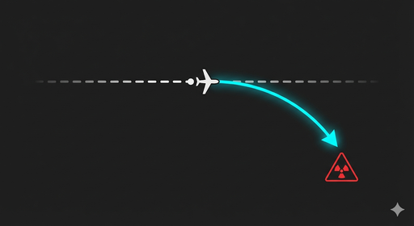
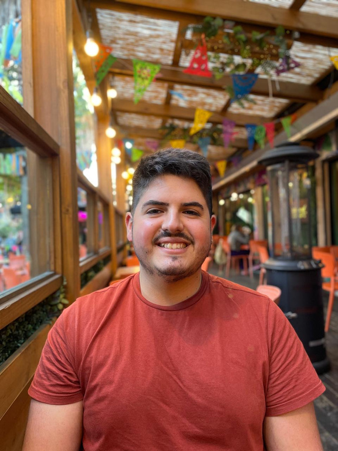
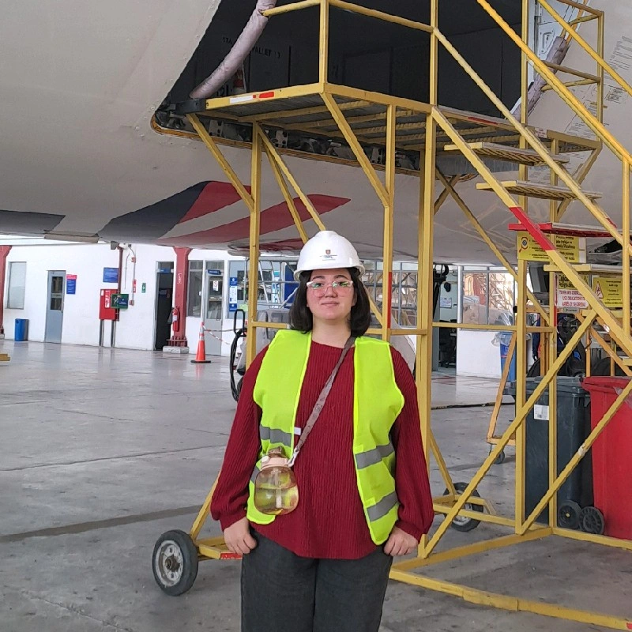

Centrales de Operaciones
Información tardía o fragmentada. Cuando los sistemas satelitales reportan un incremento térmico, el frente de fuego ya ha alcanzado escala de emergencia.
Toma de decisiones reactiva
Cerramos la ventana de vulnerabilidad nocturna en grandes extensiones territoriales. Nuestra plataforma VTOL autónoma integra Edge AI para detectar, verificar y geo-referenciar amenazas en tiempo real, reduciendo hasta un 90% el costo de monitoreo aéreo.
En temporadas de alto riesgo, los incidentes provocados por acción humana se concentran en horarios sin cobertura aérea activa. La ausencia de vigilancia táctica nocturna deriva en focos descontrolados y pérdidas millonarias.
Información tardía o fragmentada. Cuando los sistemas satelitales reportan un incremento térmico, el frente de fuego ya ha alcanzado escala de emergencia.
Exposición permanente a pérdidas severas en biomasa comercial, instalaciones industriales y predios agrícolas por focos no contenidos en su origen.
Despliegues nocturnos en zonas complejas sin reconocimiento aéreo previo, incrementando el peligro para brigadas y cuadrillas operativas.
Un ecosistema de software y hardware concebido para transformar sensores aéreos aislados en una red inteligente de respuesta y toma de decisiones autónoma.

Inferencia de visión computacional en el borde (Edge AI). Identifica y verifica fuentes de calor y presencia en oscuridad total, manteniendo la tasa de falsos positivos por debajo del 5%.
Cálculo instantáneo de coordenadas geográficas de la anomalía sin margen de error por perspectiva, facilitando el despacho exacto de recursos terrestres.
Ante eventos sospechosos, la aeronave adapta su patrón de vuelo de forma autónoma y emite alertas estructuradas de bajo peso de datos, operando sin depender de enlaces 4G/5G de alta velocidad.
Capacidades de transmisión de video y audio táctico a demanda. El operador central mantiene el control supervisorio y la potestad de la decisión final.
| Parámetro | Operación con Dron Convencional | Plataforma Foresight AI (Strig Systems) |
|---|---|---|
| Modo de Navegación | Pilotaje manual asistido por operador en terreno | Misiones programadas con re-enrutamiento reactivo autónomo |
| Dependencia de Conectividad | Requiere enlace ininterrumpido de alto ancho de banda | Procesamiento Edge autónomo; no se detiene ante pérdida de señal |
| Filtrado y Calidad de Datos | Flujo de video en bruto que induce fatiga operativa | Fusión bi-espectral y alertas filtradas con precisión < 5% falsas alarmas |
| Estructura de Costos | Costos escalados por cuadrilla y equipo dedicado | Ahorro del 90% en patrullaje (~US$250/h vs US$2.500/h avión tripulado) |
| Trayectoria Regulatoria | Línea de vista visual diurna (VLOS) | Diseñado para transición a operaciones nocturnas BVLOS bajo DGAC |
Diseñado para empresas forestales, minería, utilities e instituciones públicas que buscan evaluar el impacto de la vigilancia autónoma en sus predios de mayor riesgo.
Mapeo de predios prioritarios, análisis de topografía, identificación de zonas ciegas actuales e integración con los protocolos de seguridad del cliente.
Despliegue controlado para calibración de firmas térmicas, prueba de enlace de alertas ligeras y simulación de escenarios de detección nocturna.
Patrullaje autónomo programado en las ventanas horarias de máxima vulnerabilidad con monitoreo y soporte en tiempo real.
Auditoría completa de métricas: tiempo de detección, incidentes prevenidos, reducción de despachos en falso y propuesta de escalamiento IaaS.
Combinamos rigor científico aeroespacial con validación de mercado industrial. Participamos activamente en consorcios de innovación y programas de aceleración de alta exigencia.
Proyecto adjudicado para la validación técnica y comercial de la arquitectura de vigilancia autónoma.
Respaldo científico e infraestructura de ensayos para integración de sistemas aerodinámicos y aviónica.
Aceleración tecnológica, participación en Brain Chile y preparación para programas de escalamiento internacional.
Entrevistas operativas y contraste de requerimientos técnicos con gerencias de Arauco, OroraTech y Everseek.
Levantamiento de ronda para escalamiento de prototipos VTOL de largo alcance y certificación operacional nocturna BVLOS.
Colaboración en modelos de inferencia computacional para condiciones atmosféricas extremas y sensores multiespectrales.
Modelos B2G orientados a la protección de interfaz urbano-forestal y reducción de costos públicos en emergencias.
Un equipo con base en ingeniería aeroespacial, experiencia operativa directa en emergencias y dominio de la normativa aeronáutica civil.
Ingeniería Aeroespacial. Especialista en Visión Computacional, Machine Learning, Ingeniería de Sistemas y CAD/CAM.

Ingeniería Aeroespacial. Bombero Operativo. Especialista en CFD, análisis aerodinámico y arquitectura táctica.
Ingeniería Aeroespacial. Diseño RPAS, certificación de aeronavegabilidad y regulaciones operacionales DGAC.

Ingeniería Aeroespacial. Integración de sistemas, ensayos de vuelo RPAS, simulación aerodinámica y CFD.
PhD Space Systems Engineering and Management. Asesor en arquitectura de misión y desarrollo de tecnología aeroespacial.
Si representas a una empresa forestal, institución de respuesta territorial, o eres evaluador de fondos y desafíos de innovación, nuestro equipo técnico está disponible para atender tu requerimiento.